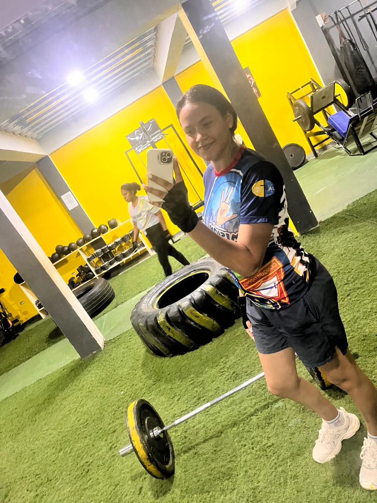
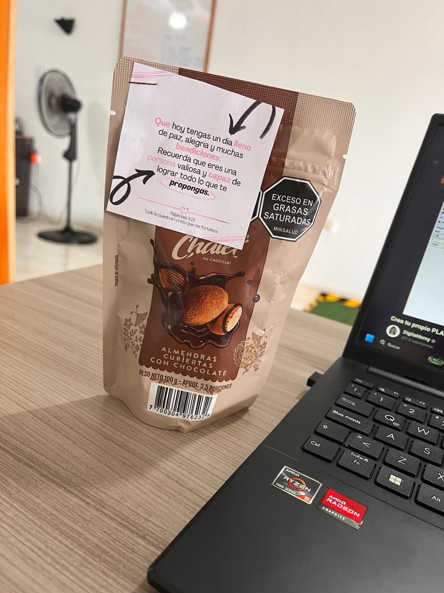
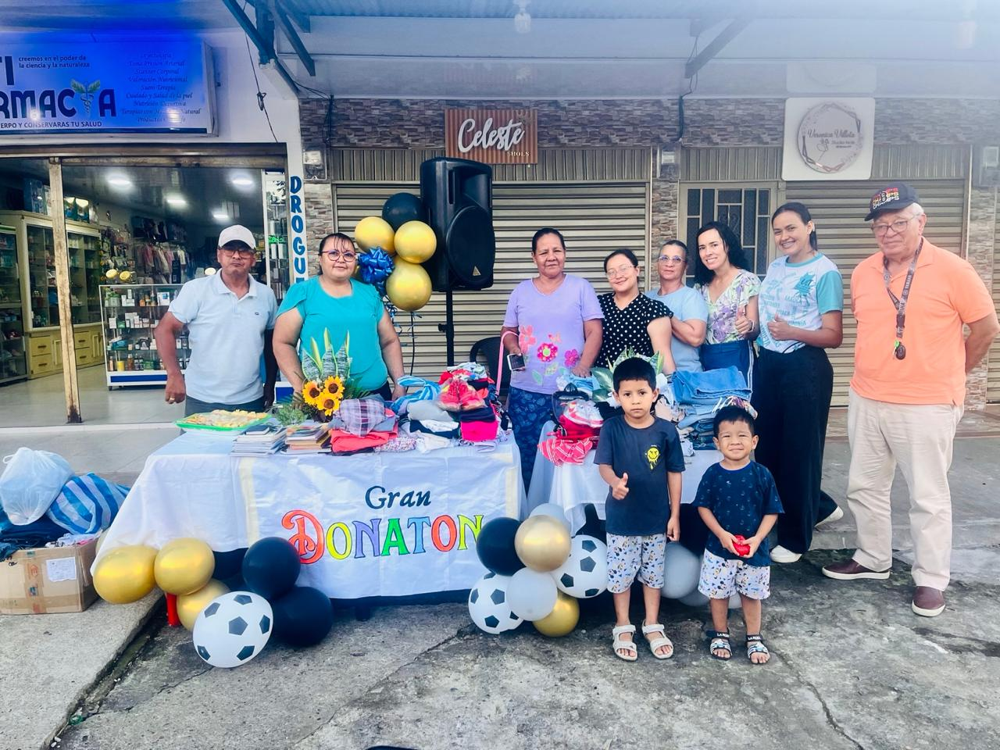

Estrategias de Autocuidado y Compromiso
Gym (Entrenamiento tarde/noche)
Rutina:3 veces a la semana
Insumo:
Detalles anónimos y mensajes
Rutina:1 vez por semana
Insumo:Versículos y afirmaciones

Donación de ropa a personas vulnerables del Municipio
Rutina:Frecuencia Trimestral
Propósito:Apoyo a personas vulnerables
